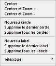
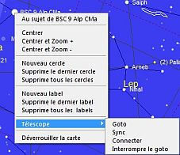
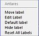
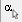

Ce tableau montre le résultat des actions à la souris sur la carte :
| | Clic gauche | Clic droit |
| Objet | Etiquette complète | Menu contextuel |
| Etiquette (modifiable) | Information détaillée | Modif. Etiquette |
| Etiquette (non modif.) | | Menu contextuel |
| Zone vide | | Menu contextuel |

Le menu contextuel s'obtient par un clic droit sur la carte, sauf sur une étiquette quand le mode “Modifier les étiquettes” n'est pas actif.
Entrées :
Au sujet de … cette entrée n'apparait que si le curseur était sur un objet au moment du clic droit. Elle ouvre une fenêtre d'informations détaillées sur l'objet.
Centrer chart is moved so cursor coordinates on the chart when right-click become center of the chart.
Centrer et Zoom + Pareil que “Centrer” et divise le champ de vision par 2.
Centrer et Zoom - Pareil que “Centrer” et multiplie le champ de vision par 2.
Nouveau cercle montre un champ d'oculaire flottant que vous fixez par un clic gauche sur la carte. Vous pouvez en créer autant que vous voulez. Ces champs d'oculaire sont indépendants de la commande “Carte > Lignes/Grille > Voir les marques” ou l'icône
de la barre d'outils “objet”.
Supprime le dernier cercle efface le dernier champ d'oculaire créé par la commande précédente.
Supprime tous les cercles efface tous les champs d'oculaire créés par la commande “Nouveau cercle”.
Nouveau label créé une étiquette utilisateur sur la carte. Voir
Etiquettes.
Supprime le dernier label efface la dernière étiquette créé par la commande précédente.
Supprime tous les labels efface toutes les étiquettes créées par la commande “Nouveau label”.
Télescope Montre un sous-menu :
Verrouiller/Déverrouiller la carte sur les coordonnées selectionnées. Cette entrée n'apparait que si le curseur était sur un objet au moment du clic droit.

Le menu contextuel de modification des étiquettes apparaît par un clic droit sur une étiquette quand le mode “Modifier les labels” est actif (icône  de la barre d'outils “objet”). Voir Etiquettes.
{kind=link}
{kind=link}
{kind=link}
{kind=link}
{kind=link}
{kind=link}
{kind=link}
{kind=link}